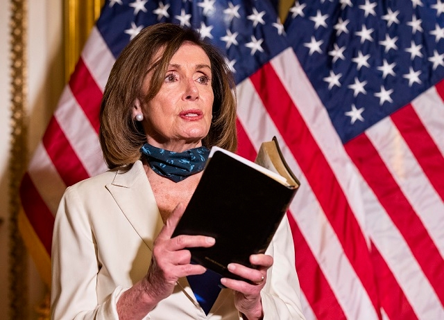
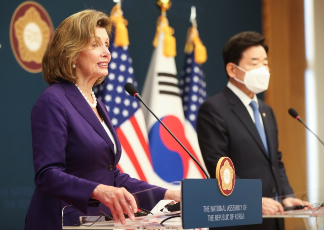

민주당 소속 낸시 펠로시 하원의장이 2020년 6월 2일(현지시간)
미국 의회의사당에서 도널드 트럼프 대통령이 대규모 인종차별 반대 시위 국면에서
제역할을 해야 한다고 촉구하고 있다. 펠로시 의장은 이날 성경책을 들어 눈길을 끌었다.
지난 20년간 미국 의회 하원에서 민주당을 이끌어 온 낸시 펠로시 하원의장이 당 지도부 사퇴 의사를 천명했다.
펠로시 의장은 17일(현지시간) 하원 연설에서 내년 1월 개원하는 다음 의회에서 당 지도부 선거에 나서지 않고 평의원으로 백의종군하겠다고 밝혔다. 그는 “이제 우리는 대담하게 미래로 나아가야 한다. 새로운 세대를 위한 시간이 왔다”며 민주당 지도부의 세대교체 필요성을 언급했다.
펠로시 의장은 “미국 민주주의는 장대하지만 허약하다. 우린 비극적이게도 이 회의장에서 우리의 연약함을 목도했다”며 “민주주의는 이에 해를 끼치려는 세력으로부터 영원히 수호되어야 한다”고 강조했다.
펠로시 의장은 2003년 1월부터 2007년 1월까지 하원에서 민주당 원내대표를 지냈고, 민주당이 다수당이 된 2007년 1월 미국 역사상 처음으로 여성 하원의장에 올라 2011년 1월까지 직무를 수행했다. 민주당이 하원에서 다수당 자리를 뺏긴 뒤인 2011년 1월부터 2019년 1월까지 다시 하원에서 원내대표로 일했고, 2019년 1월 민주당이 다수당이 된 뒤 지금까지 하원의장을 맡아왔다.

지난 8월 방한한 낸시 펠로시 미국 하원의장이 서울 여의도 국회에서 김진표 국회의장과 공동언론 발표를 통해 회담 결과를 발표하고 있다.
펠로시 의장이 당 지도부 선거에 나서지 않겠다고 밝힘에 따라 그는 약 20년간 맡아온 민주당 하원 최고 지도자 자리를 내놓게 됐다. 미 하원의장은 미국에서 대통령과 부통령 다음가는 권력 서열 3위의 막강한 자리다.
민주당은 오는 30일 지도부 선거를 할 예정이다. 하지만 이번 중간선거에서 민주당은 하원 다수당 자리를 공화당에 빼앗겨 차기 하원의장은 공화당에서 의장 후보로 선출된 케빈 매카시 원내대표가 유력시된다.
펠로시 의장의 당 지도부 퇴진 선언은 11·8 중간선거 패배에 따른 것으로, 그의 거취는 중간선거 직후 미 정계에서 초미의 관심사로 떠올랐었다. 그는 전날 공화당의 하원 다수당 지위가 확정되자 이날 공식 연설을 통해 전격 퇴진을 발표했다.
그의 퇴진 결정은 당내 세대교체론도 고려한 것으로 보인다. 현재 82세로 고령인 펠로시는 그동안 하원의장직을 무난히 수행해왔다는 평가에도 당내에서 세대교체 압박을 받아왔다.
낸시 펠로시(오른쪽) 미 하원의장이 2020년 2월 4일(현지시간) 미 국회의사당에서 열린 도널드 트럼프 대통령의 국정연설 중 그의 연설문을 찢고 있다.
또 중간선거 직전에 불거진 남편 폴 펠로시 피습 사건도 그의 결정에 적지 않은 영향을 준 것으로 분석된다. 폴 펠로시는 지난달 샌프란시스코 자택에서 40대 남성에게 둔기 공격을 당해 긴급 수술을 받았다. 당시 펠로시 의장은 언론 인터뷰에서 “너무 무서웠다”면서 피습 사건이 자신의 정치 행보에 영향을 미칠 것이라고 말해 지도부 불출마를 시사한 바 있다.
바이든 대통령은 이날 성명을 내고 “역사는 그를 우리 역사상 가장 훌륭한 하원의장으로 기록할 것”이라며 “그는 민주주의의 맹렬한 수호자로서, 역사는 치명적인 의사당 폭동으로부터 민주주의를 수호하기 위한 (그의) 결의를 기록할 것”이라고 치켜세웠다. 그는 펠로시 의장을 “가장 소중한 친구”라고 칭하며 “우린 그에게 깊은 감사의 빚을 지고 있다”고 했다.
권남영 기자(kwonny@kmib.co.kr)